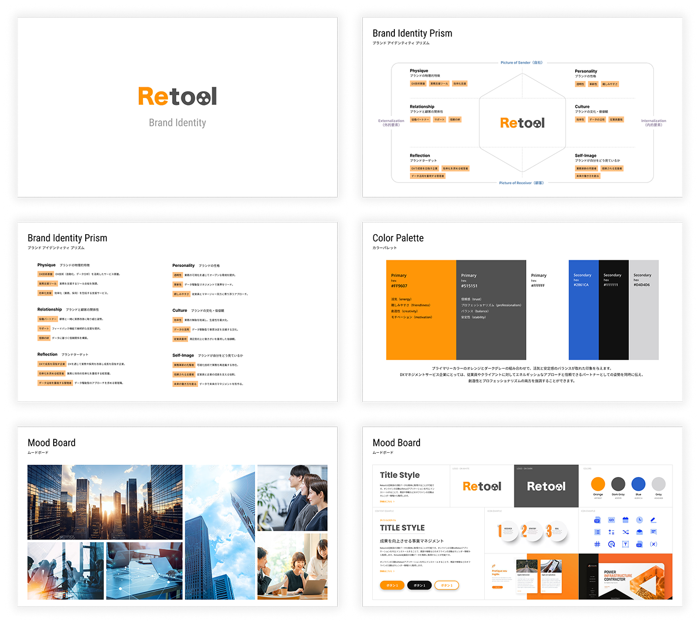
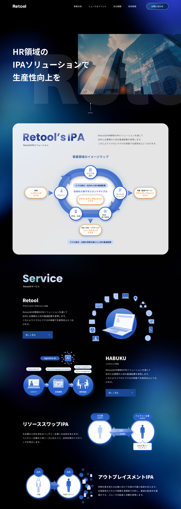
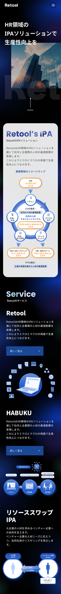

Retool
Corporate Site Renewal
株式会社Retool
コーポレートサイトリニューアル
- 担当役割
- Webデザイン・コーディング・運用デレクション・運用
- 制作年・期間
- 2025年 4月 ~ 9月 5カ月
- チーム規模
- ディレクター1名 Webデザイナー1名 コーダー1名 プロデューサー1名
- 使用ツール
- WordPress・Figma・Illustrator・Photoshop・HTML・CSS・JavaScript
Overview
ITツール開発会社・Retoolのコーポレートサイトリニューアルプロジェクトを担当。WordPressを活用した情報設計の見直しから設計・実装まで一貫して対応しました。企業の強みが伝わるサイト構造の実現と、将来の運用・改修を見据えたコンポーネント設計に注力し、小規模チームで効率的に成果物を納品しました。
Retool
https://re-tool.co.jp/


Strategy
- ヒアリングを通じて経営者・担当者のブランド認識を整理し、ブランドプリズムとして体系化
- ブランドプリズムをもとにデザインガイド（カラーパレット・フォント・トーン&マナー）を策定し、デザイン判断の根拠を明文化
- WordPressのカスタム投稿タイプ・カスタムフィールドを活用し、担当者が最小限の操作でコンテンツを更新できる投稿フローを設計
Key Contributions & Results
- ブランドの軸が不明確な状態からスタートし、ブランドプリズム構築→デザインガイド策定→サイト設計という上流からの一貫対応を実現
- WordPressの投稿機能を最適化し、非エンジニアの担当者でも迷わず更新できる運用環境を構築
- デザインガイドの策定により、今後の制作物においてもブランドの一貫性を維持できる基盤を構築